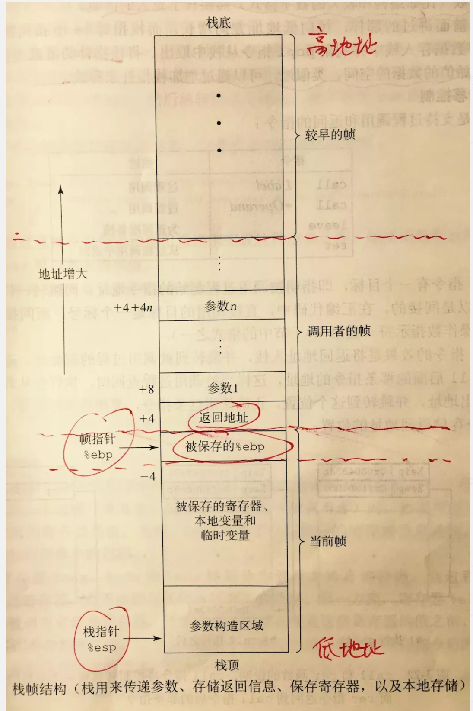
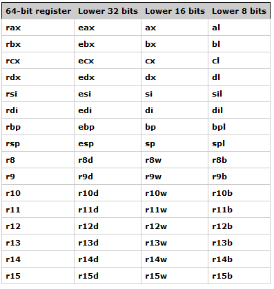

0x01 背景知识
堆栈：内存中的一个数据结构。
寄存器：CPU的存储器，速度快。
内存：CPU和硬盘之间的通道。
汇编
AT&T :
* 寄存器 – 以% 作为前缀，$作为常量前缀。
* 指令 – 源操作数在左边，目的操作数在右边；例如：eax寄存器加4: add $0x4 %eax 。
* CPU –可以在多种CPU上都可以使用。
Intel :
* 寄存器 – 寄存器指令无前缀
* 指令 – 目的操作数在左边，源操作数在右边；例如：eax寄存器加4: add eax 0x4。
* CPU – 只用在自家的x86系列CPU。
ARM：
* 寄存器 –
* 指令 –
* CPU – 只用在ARM系列CPU上。
内存
现代操作系统内存通常是以分段的形式存放不同类型的信息的:
- 函数调用栈就是分段的一个部分（Stack Segment）。
- 内存分段还包括堆（Heap Segment）用于存放程序运行中动态分配的内存，例如C语言中的 malloc() 和 free() 函数就是在堆上分配和释放内存。
- 数据段（Data Segment）存储已经初始化且初值不为0的全局变量和静态局部变量。
- BSS段存储未初始化或初值为0的全局变量和静态局部变量，这两段数据都有可写的属性。
- 代码段（Code Segment）存储可执行代码和只读常量（如常量字符串），属性可读可执行，但通常不可写。
栈

栈：使用了栈数据结构，先进后出, 同时栈是由高地址向低地址增长。
当把数据放入栈时，我们把数据push进入；当从栈取出数据时，我们把数据pop出来。栈随着数据被压入或者弹出而增长或者减小。最新压入栈的项被认为是在“栈的顶部”。当从栈中弹出一个项时，我们得到的是位于栈最顶部的那一个，就像给弹夹上子弹，只能在顶部进行操作。
在x86体系中，栈顶由堆栈指针寄存器ESP来标记，它是一个32位寄存器，里面存放着最后一个压入栈顶的项的内存地址。正因为有它，我们才能够随时操作到需要的项。需要注意的是，栈顶是朝着地内存方向增长的。栈应该被看成一个短期存储数据的地方，存在在栈中的数据项没有名字，只是按照后进先出来操作罢了。栈经常可以用来在寄存器紧张的情况下，临时存储一些数据，并且十分安全。当寄存器空闲后，我们可以从栈中弹出该数据，供寄存器使用。这种临时存放数据的特性，使得它经常用来存储局部变量，函数参数，上下文环境等。
linux_64与linux_86的区别主要有两点：首先是内存地址的范围由32位变成了64位。但是可以使用的内存地址不能大于0x00007fffffffffff，否则会抛出异常。其次是函数参数的传递方式发生了改变，x86中参数都是保存在栈上,但在x64中的前六个参数依次保存在RDI, RSI, RDX, RCX, R8和 R9中，如果还有更多的参数的话才会保存在栈上。
栈溢出：
* 覆盖ebp寄存器后面的返回地址，执行自己的想要的地址上的代码，看看函数调用发生时，如果要让 eip 指向攻击指令，需要哪些准备？这时，eip 会指向原程序中某个指定的函数，我们没法通过改写返回地址来控制了，不过我们可以“偷梁换柱”－－将原本指定的函数在调用时替换为其他函数。
栈溢出技术包括以下：
* 修改返回地址，让其指向溢出数据中的一段指令（shellcode）
* 修改返回地址，让其指向内存中已有的某个函数（return2libc）
* 修改返回地址，让其指向内存中已有的一段指令（ROP）
* 修改某个被调用函数的地址，让其指向另一个函数（hijack GOT）
堆
堆:再来看我拍的照片，为于.bss段和栈之间有一段空余内存，C程序经常使用这种剩余内存空间来为那些为于堆内存中的，“已经在运行中”的变量分配空间。我们常说的堆就存在于这里。相反，堆相对于栈，更加强调需要进行控制。常见的就是我们手动申请，手动释放。因此可以分配更大的空间，但开销也会更多。
来段代码：
寄存器

在32位环境下:
32位x86架构下的寄存器可以被简单分为通用寄存器和特殊寄存器两类，通用寄存器在大部分汇编指令下是可以任意使用的（虽然有些指令规定了某些寄存器的特定用途），而特殊寄存器只能被特定的汇编指令使用，不能用来任意存储数据。
32位x86架构下的通用寄存器包括一般寄存器（eax、ebx、ecx、edx），索引寄存器（esi、edi），以及堆栈指针寄存器（esp、ebp）。一般寄存器用来存储运行时数据，是指令最常用到的寄存器，除了存放一般性的数据，每个一般寄存器都有自己较为固定的独特用途。
- eax 被称为累加寄存器（Accumulator），用以进行算数运算和返回函数结果等。
- ebx 被称为基址寄存器（Base），在内存寻址时（比如数组运算）用以存放基地址。
- ecx 被称为记数寄存器（Counter），用以在循环过程中记数。
- edx 被称为数据寄存器（Data），常配合 eax 一起存放运算结果等数据。
索引寄存器通常用于字符串操作中: - esi 指向要处理的数据地址（Source Index）。
- edi 指向存放处理结果的数据地址（Destination Index）。
堆栈指针寄存器用于保存函数在调用栈中的状态: - esp 用来存储函数调用栈的栈顶地址，在压栈和退栈时发生变化。
- ebp 用来存储当前函数状态的基地址，在函数运行时不变，可以用来索引确定函数参数或局部变量的位置。
- eip 用来存储即将执行的程序指令的地址，cpu 依照 eip 的存储内容读取指令并执行，eip 随之指向相邻的下一条指令，如此反复，程序就得以连续执行指令。32位x86架构下的特殊寄存器包括段地址寄存器（ss、cs、ds、es、fs、gs），标志位寄存器（EFLAGS），以及指令指针寄存器（eip）。
在64位环境下:
函数的调用所需要的参数是优先通过寄存器来进行的。寄存器的顺序如下：rdi,rsi,rdx,rcx,r8,r9。当一个函数有大于6个整形参数，则超出的部分会通过栈来传递，这个情况少见。由于64位下，是优先通过寄存器来传参，所以不能像在32位环境下直接去布置栈上的数据来exp。比如：我们想要传入一个参数，那这个参数需要被布置到寄存器rdi中，这时我们可以寻找诸如pop rdi;ret的代码片段，从而在执行完pop rdi后把栈上布置好的数据存放到寄存器rdi中后能够再次控制程序执行流（ret）。
X86-64有16个64位寄存器，分别是：%rax，%rbx，%rcx，%rdx，%esi，%edi，%rbp，%rsp，%r8，%r9，%r10，%r11，%r12，%r13，%r14，%r15。
还有几个特殊的指针（寄存器）： rip、rbp和rsp。其中rip是指令指针，cpu会把rip指向的内容当作指令执行。rbp指向当前栈帧的底部。rsp指向当前栈帧的顶部。
%rax 作为函数返回值使用。
%rsp 栈指针寄存器，指向栈顶
%rdi，%rsi，%rdx，%rcx，%r8，%r9 用作函数参数，依次对应第1参数，第2参数。。。
%rbx，%rbp，%r12，%r13，%14，%15 用作数据存储，遵循被调用者使用规则，简单说就是随便用，调用子函数之前要备份它，以防他被修改
%r10，%r11 用作数据存储，遵循调用者使用规则，简单说就是使用之前要先保存原值
代码演示
1 | #include <stdio.h> |
0x02 环境准备
系统环境：Ubuntu 14.04 64bit iso – http://mirrors.163.com/ubuntu-releases/14.04/ubuntu-14.04.5-desktop-amd64.iso
安装pwntools： pip install pwntools – https://pwntoolsdocinzh-cn.readthedocs.io/en/master/intro.html
1 | $ apt-get update |
安装必备工具：sudo apt-get install nasm,gcc,gdb,binutils,hexedit
安装32位libc库：sudo apt-get install libc6-dev-i386
qira：qira – https://github.com/BinaryAnalysisPlatform/qira
peda：peda – https://github.com/longld/peda
gdb-peda：gdb方便调试的工具，类似的工具有gef，gdbinit – http://blog.csdn.net/gatieme/article/details/63254211
objdump和readelf：可以很快的知道elf程序中的关键信息
ida pro ：强大的反编译工具
one_gadget：可以快速的寻找libc中的调用exec(‘bin/sh’)的位置
libc-database： 可以通过泄露的libc的某个函数地址查出远程系统是用的哪个libc版本
PEiD：检测大多数编译语言、病毒和加密的壳
ROPgadget：强大的rop利用工具
checksec：可以很方便的知道elf程序的安全性和程序的运行平台
cyclic: 找出返回地址具体偏移
1 | $ cyclic 3000 #生成3000个字符 |
libcdb：
0x03 操作流程
1.判断操作系统位数(32,64): 使用file,和 checksec, strings都可以查看程序是否为32,64
2.判断已有的保护:
* 【1】RELRO：RELRO会有Partial RELRO和FULL RELRO，如果开启FULL RELRO，意味着我们无法修改got表
* 【2】Stack：如果栈中开启Canary found，那么就不能用直接用溢出的方法覆盖栈中返回地址，而且要通过改写指针与局部变量、leak canary、overwrite canary的方法来绕过
* 【3】NX：NX enabled如果这个保护开启就是意味着栈中数据没有执行权限，以前的经常用的call esp或者jmp esp的方法就不能使用，但是可以利用rop这种方法绕过
* 【4】PIE：PIE enabled如果程序开启这个地址随机化选项就意味着程序每次运行的时候地址都会变化，而如果没有开PIE的话那么No PIE (0x400000)，括号内的数据就是程序的基地址
* 【5】FORTIFY：FORTIFY_SOURCE机制对格式化字符串有两个限制(1)包含%n的格式化字符串不能位于程序内存中的可写地址。(2)当使用位置参数时，必须使用范围内的所有参数。所以如果要使用%7$x，你必须同时使用1,2,3,4,5和6。
* 【6】Canary: 编译程序时还可以设置某些编译选项，使程序在运行时会在函数栈上的 ebp 地址和返回地址之间生成一个特殊的值，这个值被称为“金丝雀”（关于这个典故，请大家自行谷歌）。这样一旦发生了栈溢出并覆盖了返回地址，这个值就会被改写，从而实现函数栈的越界检查。
测试：gcc test.c -o pwn -O0 -fno-stack-protector
选项 -O0 表示不进行任何优化， -fno-stack-protector表示无canary保护。 3.静态分析: IDA进行查看汇编类型(AT&T, Intel, ARM)
4.模糊测试分析报错点是否存在溢出
参考
** 背景知识： **
https://firmianay.gitbooks.io/ctf-all-in-one/content/doc/1.5.1_c_basic.html
https://www.jianshu.com/p/5a4f2d78cb53 – x64函数调用分析–寄存器指令和栈
https://www.anquanke.com/post/id/86383 – ARM汇编参考
https://www.cnblogs.com/33debug/p/6773059.html — 栈的使用
https://blog.csdn.net/bjbz_cxy/article/details/79467688 – x86汇编指令集大全
https://www.jianshu.com/p/5910b9e63644
http://blog.sina.com.cn/s/blog_5420e0000101a0w1.html
http://www.kerneltravel.net/journal/v/mem.htm
** 测试站点： **
Pwnable.kr ( http://pwnable.kr )：有不同难度的题目，内容涵盖多个领域，界面很可爱
https://etenal.me/archives/972 –pwn.kr 练习解说
http://www.secist.com/archives/3613.html –pwn.kr 练习解说2
Pwnhub ( https://pwnhub.cn/index)：长亭出品，题目丰富，积分排名机制，还可以兑换奖品，快来一起玩耍吧！
http://Pwnable.tw（ Pwnable.tw )：由台湾CTF爱好者组织的练习平台，质量较高
http://www.freebuf.com/column/183879.html – 实战测试演示
Exploit Exercises ( https://exploit-exercises.com )：有比较完善的题目难度分级，还有虚拟机镜像供下载